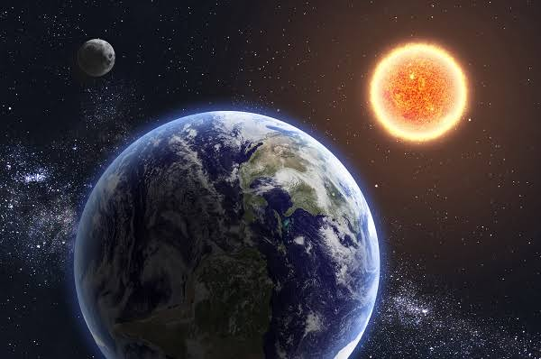
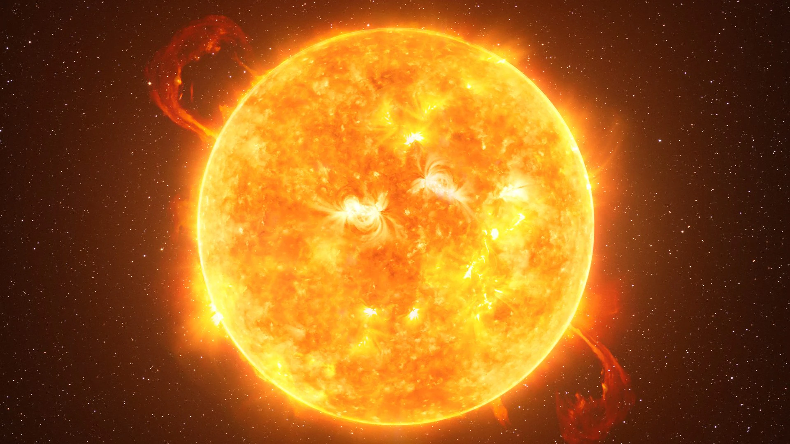

Il Sistema solare è il sistema planetario situato nel braccio di Orione della Via Lattea, nato circa 4,6 miliardi di anni fa. È governato dalla forza di gravità del Sole, una stella nana gialla che da sola contiene circa il 99,86% della massa totale dell'intero sistema.
Il sistema solare è formato dal SOLE, dalla TERRA e dalla LUNA.

Il Sole è la stella al centro del Sistema Solare. Produce luce e calore ed è fondamentale per la vita sulla Terra.